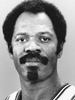

Mo Cheeks1 Season in SAS - Averaged 10.9 points, 6.0 assists, 1.6 steals in 50 games Inducted in 2018 |
|
Louie Dampier3 Seasons in SAS - Averaged 6.7 points in 232 games Inducted in 2015 |
|
Tim Duncan19 Seasons in SAS - Averaged 19.0 points, 10.8 rebounds, 2.2 blocks in 1392 games NBA's Top 75, 5x NBA Champion, 2x MVP, 3x Finals MVP, 10x All-NBA 1st, 8x All-NBA Defensive 1st, ROY, 15x All-Star Inducted in 2020 |
|
Pau Gasol3 Seasons in SAS - Averaged 10.0 points, 7.4 rebounds in 168 games Inducted in 2023 |
|
George Gervin9 Seasons in SAS - Averaged 27.3 points, 4.8 rebounds, 1.3 steals in 709 games NBA's Top 50, NBA's Top 75, 5x All-NBA 1st, 9x All-Star Inducted in 1996 |
|
|  | Artis Gilmore5 Seasons in SAS - Averaged 16.1 points, 9.7 rebounds, 1.8 blocks in 380 games 2x All-Star Inducted in 2011 |
Manu Ginobili16 Seasons in SAS - Averaged 13.3 points, 1.3 steals in 1057 games 4x NBA Champion, 6MOY, 2x All-Star Inducted in 2022 |
|
Moses Malone1 Season in SAS - Averaged 2.9 points in 17 games NBA's Top 50, NBA's Top 75 Inducted in 2001 |
|
17 Seasons in SAS - Averaged 15.8 points, 5.7 assists in 1198 games 4x NBA Champion, Finals MVP, 6x All-Star Inducted in 2023 |
|
 |
David Robinson14 Seasons in SAS - Averaged 21.1 points, 10.6 rebounds, 3.0 blocks, 1.4 steals in 987 games NBA's Top 50, NBA's Top 75, 2x NBA Champion, MVP, 4x All-NBA 1st, DPOY, 4x All-NBA Defensive 1st, ROY, 10x All-Star Inducted in 2009 |
Dennis Rodman2 Seasons in SAS - Averaged 5.6 points, 17.1 rebounds in 128 games NBA's Top 75, All-NBA Defensive 1st Inducted in 2011 |
The San Antonio Sports Hall of Fame honors those who have made an impact in the world of sports and have ties to San Antonio. The class of 2022 includes former WNBA San Antonio Stars All-Star and NCAA Champion Sophia Young-Malcolm, 12-year NFL veteran Ndukwe Dike “N.D.” Kalu, iconic high school football coach, George Pasterchick, and Baylor University track All-American Natalie Nalepa Linam.
They will be inducted at the San Antonio Sports Hall of Fame Tribute presented by H-E-B on Saturday, April 23, 2022 in the Henry B. Gonzalez Convention Center.